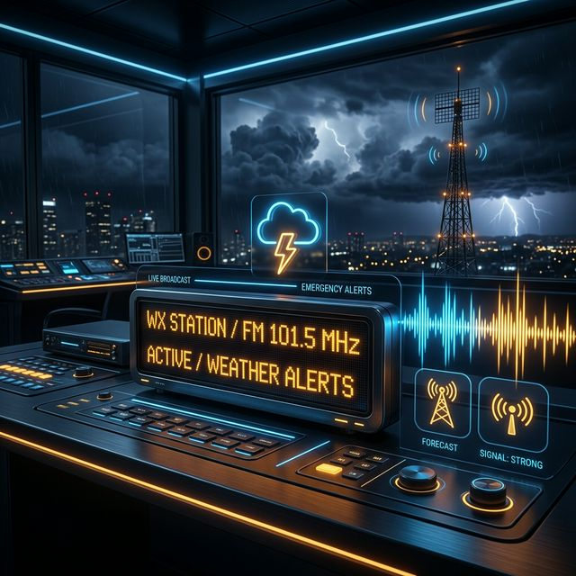

WXB 26 - 162.550 MHz
Weather-Ready Nation Ambassador™
Premium NWS Weather Relay for New York City
Always on. Always accurate. Real-time NWS alerts relayed instantly with professional EAS/SAME integration.
Station Live Stream
80.0 Kbps Digital Audio
Note: Adjust volume to 50% for optimal clarity.

🚨
EAS/SAME Relay
Instant injection of Tornado, Severe Thunderstorm, and Flash Flood warnings directly into the stream.
🎙️
NeoSpeech Paul
High-fidelity text-to-speech synthesis providing a professional, recognizable voice for the Tri-State area.
⚓
Marine Integrated
Comprehensive marine forecasts for New York Harbor, the Long Island Sound, and the Jersey Shore.
Broadcast Coverage
New York City
Northern New Jersey
Long Island
Westchester & CT
Coastal Waters